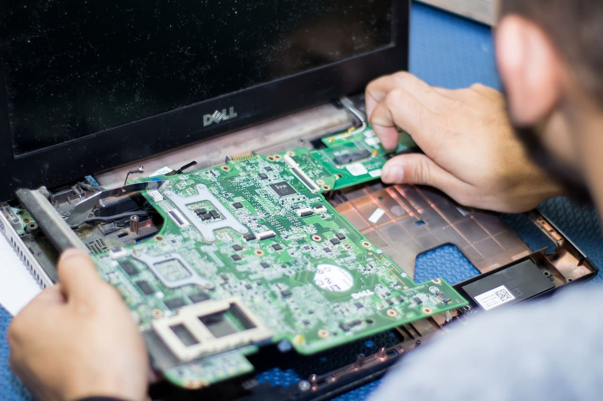

Las laptops se han convertido en una parte esencial de nuestra vida diaria, pero cuando surgen problemas técnicos, puede ser frustrante. Desde problemas de hardware hasta cuestiones de software, estamos aquí para abordar cualquier inconveniente que pueda afectar el desempeño de tu laptop.
Los servicios abarcan desde diagnósticos detallados hasta la reparación de componentes clave, incluyendo procesadores, tarjetas gráficas, discos duros y más. Ya sea que tu laptop experimente problemas de velocidad, pantallas congeladas, o simplemente necesite una actualización para mantenerse al día con las demandas actuales.